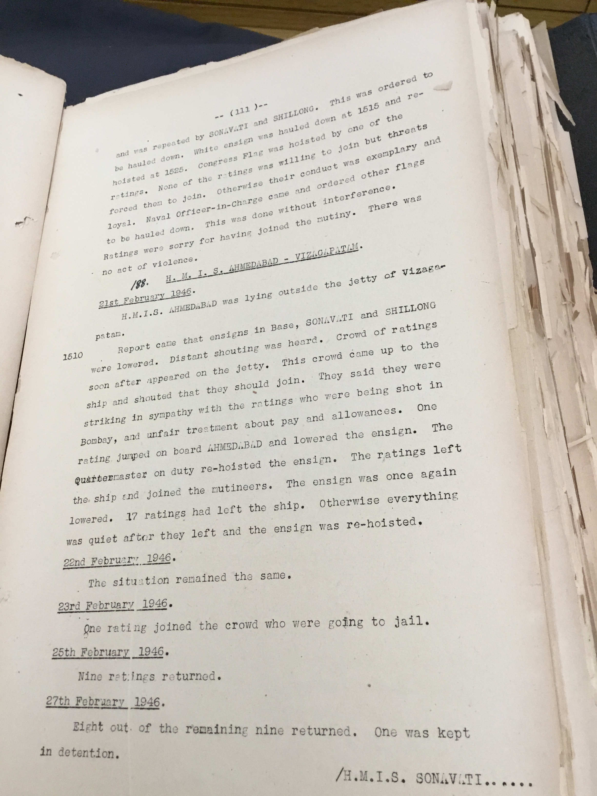

16841; 0915
On February 8, an incident occurred which caused great excitement. The first parade for the Central Communications Office (CCO) ratings was at 9:15 a.m. While they were busy dressing in their barracks, the ·CO suddenly walked in and shouted: "Get up, you sons of coolies; you sons of Indian bitches." In surprise the boys turned round. The officer kept on shouting. Unmentionable filth poured out of his mouth. The CO departed, as he had come, in a storm of rage. It is probably true that the boys had failed to come to attention and salute him as he had entered the room. But then they were too busy getting ready for their parade. They decided not to bear these insults quietly any longer. But what were they to do? They could not complain collectively - according to regulations in the Navy they were not permitted to put up joint ""requests"". So the following morning fourteen ratings individually put in formal complaints against Commander King’s language. The complaints were heard by Lt. Commander Snow, Executive Officer, and referred to the CO on February 10. This officer sensed the deep discontent of the men and sent a personal and confidential letter to Commander King asking him to deal with the matter quickly and tactfully. Meanwhile, Admiral Godfrey, sitting in Karachi, has had enough.

18-02-1946; 1100
Between 3-400 men of the Royal Indian Air Force, mostly clerks, mechanical transport drivers, telegraphists on strike.
{kind=link}
16852; 1200
Admiral Godfrey arrives at Udaipur airfield. 'Things look a bit ominous'.
{kind=link}
16855; 1030
At about 10:30 a.m., the British troops suddenly opened fire with all their weapons. It was a very critical situation. The ratings on the Hindustan knew that with the low level of the ship they could not hit back effectively, but they decided to fight back as long as they could. In face of the heavy machine-gun and mortar fire, the gun crews could scarcely approach the guns. Those who dared could not elevate their guns sufficiently, because of the low tide, to bring them on to the target. They were handicapped in every way. What was more, they were afraid that if their shots went wide there was danger of their hitting the neighbouring village of Keamari, a working-class stronghold. Still, they fired back, as best as they could. Two of their shells landed close to the General's Office. The old General and his staff had to spend a panicky hour inside trenches. For twenty-five minutes the unequal battle continued, but it was impossible to continue it much longer; six of the ratings had been killed, about thirty were wounded, their shots were going wide. It would have been suicide to continue. They decided to surrender. With bullets still flying all round, a brave young rating, a mere boy, went up on the bridge with a white flag. For a moment the firing stopped, but the gunners were ordered to fire again. A 75-millimetre shell hit the boy with the white flag. Thus the brave resistance of the Hindustan came to an end as the ratings gathered round the fragments of the body of the young martyr. The British gunners went back saying: ""What a heroic resistance! They are heroes and not criminals. It was a dirty job we had. Why did the officer have to blow up that little boy? It was shameful."" In Keamari, the workers whispered: ""The poor boys. Why did they surrender? Why did they lay down their weapons? Were they afraid that they would hurt us? What of that! They should have fought to the last. They should not have surrendered."" Tears rolled down their furrowed faces. British troops now occupied the Hindustan. The leading ratings were arrested and removed to Malir Camp that very afternoon. In the evening a battalion of British paratroopers occupied Manora island and surrounded the establishments. For eighteen days they remained and all the ratings were virtually under arrest. Thus ended the great Naval strike at Karachi.
{kind=link}
16856; 1200
I have followed the events now happening in India with painful interest. This mutiny in the navy and what is following is not, in any sense of the term, non-violent action. Inasmuch as a single person is compelled to shout “Jai Hind” or any popular slogan, a nail is driven into the coffin of swaraj in terms of the dumb millions of India. Destruction of churches and the like is not the way to swaraj as defined by the Congress.
{kind=link}
16854; 0800
In the meantime things had been moving fast round the Hindustan. In the morning, the army authorities had brought up two platoons (about 60 men) of the Baluch Regiment. They were ordered to board the Hindustan. They had heard that the ratings were on strike and refused to go into action against them. The General was informed. He promptly decided to send two platoons of Gurkhas from the 2nd Battalion of the 777 Indian Parachute Brigade. ""They are the most dependable troops and fine fighters,"" he said. The General was wrong. The Gurkhas too refused to attack their own brothers. Now British troops were brought in. It was about ten-thirty when two platoons of the Black Watch Regiment appeared on the jetty alongside the Hindustan. The ratings from Manora island had also been followed by some military in a boat. ""When the landing-craft neared the jetty they realised that something was afoot, so, instead of landing, they made straight for the Hindustan. Two batches managed to get in. The third was prevented and diverted by the military. There were now 600 ratings on the Hindustan. The men ordered all the officers except the doctor to leave the ship. The Captain at first refused. Finally he saw that he had no alternative. While going down, however, he fired a shot from his revolver. This was a signal for the British troops to attack. They attempted to board the ship. The ratings hastily put up a big notice: ""IF YOU WANT TO SAVE YOUR LIVES, DO NOT COME UP.""

16860; 0900
Jubbulpore Sepoys on Strike Jubbulpore-27th February 1946: About two hundred Indian sepoys went on strike as a protest against the Commander-in-Chief's statement regarding the R. I. N. strikes, and the sentence passed on Captain Burhanuddin of the I.N. A. and in sympathy with R. I. N. personnel.
17148; 1200
CID Punjab report on Madan Singh
{kind=link}
24-03-1947; 1200
CID Notification for Basant Singh from Peshwar Cantt
{kind=link}
16838; 1200
Special Branch CID, Lord Sinha Road, Calcutta
{kind=link}
16958; 1200
G. Bhadraiah and G.P. Gupta, ex-RIN ratings and now in Yeravada Central Prison
{kind=link}
19-02-1946; 2245
A demonstration started on the arrival of ratings from Castle Barracks and Shivaji. They marched towards the guard room, some were armed with sticks.

19-02-1946; 2330
There was a cry 'Bombay Chalo' and a crowd left in four lorries and a jeep to Bombay.
20-02-1946; 0830
Some ratings allowed to resume work. The remaining detained at Madh Island.
21-02-1946; 0600
Hands did not fall to work as usual. Ex-army men, mainly landing craft personnel, were willing to work if left unmolested. Congress and League flags were flying in the guard room though the ensign flew on the flagstaff through the mutiny. Meetings were held in the cinema hall.
{kind=link}
RAF; ASHISH THERE AINT NO TIME
A formation of RAF aircraft flew over the establishment and there was FOCRIN's broadcast in the afternoon. This had a sobering effect.
19-02-1946; 0900
A crowd of ratings, 250 to 300 strong, presumably from HMIS Kakauri, Broke into Machlimar, shouting slonags and tried to induce the ratings to join.
{kind=link}
20-02-1946; 0820
Another crowd of about 300 ratings broke into Machlimar, hauled down the white ensign and tore it up and hoisted the Jaihild flag, broke a few window panes, pulled down notice boards, and smashed the windscreen of a motor transport.
19-02-1946; 1100
A three-ron truck is appropriated by mutineers who then proceed to the Talwar
{kind=link}
19-02-1946; 0930
As both watches were falling in, a rowdy mob of ratings approached the ship from the Castle Barracks shouting slogans such as 'sympathise with Talwar' etc and exhorted the ratings to go on strike.
{kind=link}
21-02-1946; 0900
Firing was heard from Castle Barracks, but the ratings remained quiet. A signal was received from Castle Barracks that they were surrounded by the army and requesting arms anb ammunitions. Signal then arrived that Khan, President of the Strike Committee, was coming to talk to the ratings. He boarded the HMIS Kumaon and made a speech. Another signal was received from the Castle Barracks that 20 persons had been shot. After this, and after the speech, ammunition and guns were manned. Sticks, cutlasses etc were broight out and loaded in the adjacent ships. Jumna Oerlikons were not manned as they had no ammunition.
{kind=link}
20-02-1946; 0900
HMIS BARODA shows signs of unrest and there is some refusal to obey orders.
{kind=link}
20-02-1946; 1000
Ratings insist on walking out in procession in Lonavala village where they are addressed by the CO and then return tio the village. 'Quit India and Indonesia' slogans.
20-02-1946; 0900
The Kakauri formally joins the strike.
{kind=link}
20-02-1946; 0900
Duty Officer reports that cooks have drawn attention to the quality of atta, which was bitter.
{kind=link}
21-02-1946; 0745
Commanding Officer, HMIS Himalaya, informed that his men would probably refuse Duty ATt 0900 and might march in a procession to HMIS Bahadur.
21-02-1946; 1130
Light automatic fire from the direction of Keamari, firing of 4 inch guns
{kind=link}
21-02-1946; 1515
Commanding Officer, HIS Bahadur, propceeds to the Hindustan to persuade some of the boys to return. Nobody is allowed on board, after bwhich he proceeds to Keamari to see if any boys or ratings wanted passage back.
22-02-1946; 1035
Gunfire heard from Keamari, The Captain orders boats to be scuttled.
{kind=link}
21-02-1946; 0825
Considerable noise, In five minutes, Clear Lower Deck sounded. No rating appeared. POs and CPOs turned up. The Captain addressed them in English. Then there was an invasion by ratings of Bahadur and Chamak.
21-02-1946; 0850
Ratings of Himalaya, Bahadur and Chamak seized landing craft and proceeded to Hindustan. They wanted to embark first at Keamari. It appears that they were followed by a military boat.
{kind=link}
20-02-1946; 1200
News was received at Hindustan that MONZE had struck (mutunied). Still there was no demonstration.
20-02-1946; 1415
Signal received from Naval headquarters that both the Hindustan and Travancore to proceed to sea at 1700.

21-02-1946; 0950
About fifty ratings armed with hockey sticks stop alongside the ship. They are joined by Hindustan ratings who come up on deck to join the crowd ashmore.
{kind=link}
20-02-1946; 1800
The second ship ordered to proceed out to sea. At 1800 the duty watch is piped to fall in but fails to answer the pipe. Orders to clear the lower deck. 16 ratings obey.
{kind=link}
23-02-1946; 0730
The ship enters the harbour. At no time during this incident were the strikers in an ugly mood. No violence was offered. The only active demonstration was the shouting of slogans. 50 per ent joined through threats.
{kind=link}
21-02-1046; 1000
A few small arms rounds are being fired. Everything appears to be in order in the Monze. The only incident that happened was that there was a fire in a cabin and the signal blocks were burnt.

21-02-1946; 0900
A meeting of ratings was held with a number of resolutions made.
{kind=link}
21-02-1946; 1530
Admiral's broadcast was heard and it had considerable effect. The ratings did not understand that there was no such thing as a strike, and that a mutiny is a very serious matter.
21-02-1946; 1600
Gist of Admiral's speech mentioned in to ship's company. News broadcast that some RIN ships seized by mutineers in Bombay and Karachi may open fire.
24-02-1946; 0900
News of the surrender of the 23rd is passed on to the ratings. However, the further news that the 'RIN Torpedo School had not taken part in the strike' leads to precisely the opposite effect: Valsura effectively declares its strike a day after it has ended everywhere else.
{kind=link}
19-02-1946; 1350
Wireless Telegraphy ratings refuse duty.
{kind=link}
21-02-1946; 0900
Stewards, cooks, topasses of the Naval Officers Mess at Lord Sinha Road went on strike as a result of a few Hooghly ratings encouraging them.
20-02-1046; 1550
Ratings of the Naval Barracks refuse duty. The strike moves to Delhi.
{kind=link}
21-02-1946; 0530
Ratings assemble on the mess deck. They are addressed by the leading tel. who tells them that they should show their sympathy with what is going on in Bombay. Hands are called. Congress flag on the GAFF.
{kind=link}
21-02-1946; 1430
A number of writers and store assistants did not start work... Shouting broke out and the party marched to the Base Jetty, where it was joined by ratings of the Sonavati, Ahmedabad and Shillong, and M.L. of the 121st and 136th flotillas.
{kind=link}
21-02-1946; 1820
Mutineers congregate on the Waltair Golf Course. They are willing to return to the base provided the Commanding Officer of the Cincars apologized.
{kind=link}
21-02-1946; 1400
Flotilla fell in on the jetty in accordance with the daily routine. Slovenly fall-in was observed and slogan 'Jai hind' was heard.
{kind=link}
21-02-1946; 0900
Jai Hind was hoisted by the Harbour Signal Station and repeated by the Sonavati and the Shillong.
{kind=link}
21-02-1946; 1510
The Ahmedabad was lying ouside the jetty of Vishakapatnam pier. Reports came in that ensigns in Base, Sonavati and Shillong were lowered. Distanbt shouting was heard.
21-02-1946; 1500
White ensign was hauled down. jai Hind was hoisted. Clear lower deck was piped and the ensign was re-hoisted. Lower deck was cleared in an orderly manner but several ratings had broken out of the ship and joined the mutineers ashore.
{kind=link}
21-02-1946; 0850
All ratings exscept one Tel. fell in raggedly and without caps, and marched round the base before the Naval officer-in-charge. There was orderly demonstration and shouting of slogans at Willingdon Island.

24--2-1946; 1600
Ratings resume duty. The Commanding Officer, HMIS Baroda, said that his ratings had staged a passive 24 hours mutiny in sympathy ith the Bombay ratings to demonstrate their soldarity.
23-02-1946; 1000
The mutiny takes place in the Andamans. The Rohilkhand, the Deccan, the Bengal, the Carnatic, the Bihar, the Kistna and the Baluchistan join. The total number of ratings in the seven ships are 707. Miscellaneous ratings kept aloof but 50% of the engine room department refused duty.
{kind=link}
23-02-1946; 0600
Ratings refused to get up on the HMIS Baluchistan. In an hour, colours are hoisted, the Congress flag on the yardarm.
{kind=link}
16955; 0930
The Second INA Trials Court Martial of Captain Burhanuddin proceeds, with the evidence of defence witness A. Ghani.
{kind=link}
17016; 1730
Congress government sworn in at Karachi in the Provincial Elections.
16985; 0930
The second INA Trials continue. The War Secretary gives the following figures: the number of INA personnel covered are 19,500, of which 6,000 are in custody in India, 2,000 in South East Asia. 27 military members have died in custody, and 9 have been hanged.
17108; 1100
Frontier Legislativre Assembly elections: 18 Congress, 8 Muslim League.
{kind=link}
16-02-1946; 1500
Kakinara station, 22 kms from Calcutta, is burnt, amid major rioting in Calcutta, leading to 15 killed in mililtary and police firing and 150 wounded. These are protests against the Captain Abdur Rashid of the INA.
{kind=link}
31-01-1946; 1200
P.C. Ghosh of the Congress Working Committee warns that the Midnapore district may face a greater famine than even 1943.

16568; 0800
The Indian National Army trials (of captured members) began on November 5, 1945 at the Red Fort in Delhi, as three stalwarts of the Azad Hind Fauj — one a Muslim (Shahnawaz Khan), one a Hindu (Prem Sahgal) and one a Sikh (Gurbaksh Dhillon) — arrived at Subhas Bose’s ""Chalo Delhi"" destination in ironic ironclad circumstances.
About the Map
This map is created for the Insurrection 1946 exhibition by Saman Goudarzi and Sumandro Chattapadhyay at the Centre for Internet and Society (CIS), India, with help from Sanjay Bhangar and Shekhar Krishnan. Events, locations, and images are selected and compiled by Ashish Rajadhyaksha and Saman Goudarzi. Data/image credits. Developed using Mapbox, MapWarper, and Lightbox.